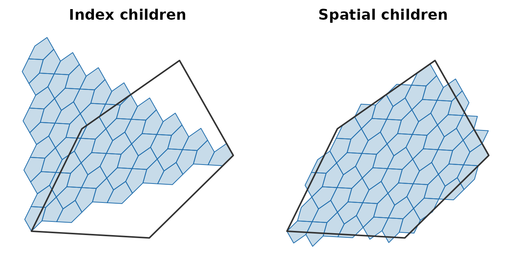
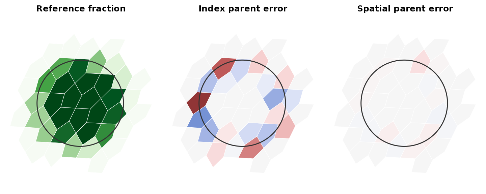

Moving between resolutions by location
Source:vignettes/spatial-hierarchy.Rmd
spatial-hierarchy.Rmda5_cell_to_spatial_parent() and
a5_cell_to_spatial_children() are experimental. Their names
and behaviour may change.
The index hierarchy is not spatially nested
a5_cell_to_parent() and
a5_cell_to_children() follow the A5 index. A cell’s index
children do not tile it: some of them lie mostly in its neighbours, and
some cells inside it belong to a neighbour’s index.
The spatial functions follow location instead. A fine cell belongs to the coarse cell containing its centre.
cell <- a5_lonlat_to_cell(-53.5, -19, resolution = 8)
index_kids <- a5_cell_to_children(cell, resolution = 11)
spatial_kids <- a5_cell_to_spatial_children(cell, resolution = 11)
outline <- a5_cell_to_boundary(cell)
lim <- wk::wk_bbox(a5_cell_to_boundary(c(index_kids, spatial_kids)))
lim <- unclass(lim)
for (panel in list(list(index_kids, "Index children"),
list(spatial_kids, "Spatial children"))) {
plot(NULL, xlim = c(lim$xmin, lim$xmax), ylim = c(lim$ymin, lim$ymax),
asp = 1, axes = FALSE, xlab = "", ylab = "", main = panel[[2]])
plot(a5_cell_to_boundary(panel[[1]]), col = "#206ead40",
border = "#206ead", add = TRUE)
plot(outline, border = "#333333", lwd = 2, add = TRUE)
}
Both sets hold 64 cells here, but only the spatial set sits inside the outline. The mismatch is not rare:
set.seed(1)
fine <- a5_lonlat_to_cell(
stats::runif(1e4, -54, -53), stats::runif(1e4, -19.5, -18.5),
resolution = 18
)
mean(a5_cell_to_parent(fine, 15) != a5_cell_to_spatial_parent(fine, 15))
#> [1] 0.3677For about a third of res-18 cells, the index parent at res 15 is a neighbour of the cell they lie in.
The upward direction shows the same thing from the other side. Here is one res-10 cell whose index parent at res 8 is not the cell it lies in:
kids <- a5_cell_to_children(a5_grid_disk(cell, 1), resolution = 10)
moved <- kids[a5_cell_to_parent(kids, 8) != a5_cell_to_spatial_parent(kids, 8)]
# the clearest case: the fine cell furthest from its index parent's centre
fine_cell <- moved[which.max(a5_cell_distance(moved, a5_cell_to_parent(moved, 8)))]
index_parent <- a5_cell_to_parent(fine_cell, 8)
spatial_parent <- a5_cell_to_spatial_parent(fine_cell, 8)
lim <- unclass(wk::wk_bbox(a5_cell_to_boundary(c(index_parent, spatial_parent))))
plot(NULL, xlim = c(lim$xmin, lim$xmax), ylim = c(lim$ymin, lim$ymax),
asp = 1, axes = FALSE, xlab = "", ylab = "")
plot(a5_cell_to_boundary(index_parent), col = "#d9534f20", border = "#d9534f",
lwd = 2, lty = 2, add = TRUE)
plot(a5_cell_to_boundary(spatial_parent), col = "#206ead20", border = "#206ead",
lwd = 2, add = TRUE)
plot(a5_cell_to_boundary(fine_cell), col = "#333333", border = NA, add = TRUE)
plot(a5_cell_to_lonlat(fine_cell), pch = 19, cex = 0.8, col = "white", add = TRUE)
legend("bottomright", bty = "n", lwd = 2, lty = c(2, 1),
col = c("#d9534f", "#206ead"), legend = c("Index parent", "Spatial parent"))The fine cell (dark, with its centre in white) sits inside the spatial parent, while its index parent is the neighbouring cell.
Aggregating to a coarser grid
Take a complete res-18 layer over a small area containing a circular patch, such as a stand of forest: cells inside the patch have value 1, cells outside have value 0. Average it to res 15 under each rule.
area <- a5_lonlat_to_cell(-53.5, -19, resolution = 12)
layer <- a5_cell_to_children(a5_grid_disk(area, 1), resolution = 18)
length(layer)
#> [1] 24576
centre <- unclass(a5_cell_to_lonlat(area))
in_patch <- function(p) {
p <- unclass(p)
as.numeric((p$x - centre$x)^2 + (p$y - centre$y)^2 < 0.004^2)
}
fine <- data.frame(value = in_patch(a5_cell_to_lonlat(layer)))
mean_by <- function(cell, value) {
stats::aggregate(list(value = value), list(cell = format(cell)), mean)
}
by_index <- mean_by(a5_cell_to_parent(layer, 15), fine$value)
by_spatial <- mean_by(a5_cell_to_spatial_parent(layer, 15), fine$value)For a reference that uses neither hierarchy, drop two million random points on the area, place each directly in its res-15 cell, and take the share of points per cell that fall in the patch. This estimates each coarse cell’s true patch fraction.
set.seed(1)
bb <- unclass(wk::wk_bbox(a5_cell_to_lonlat(layer)))
pts <- list(x = stats::runif(2e6, bb$xmin, bb$xmax),
y = stats::runif(2e6, bb$ymin, bb$ymax))
truth <- mean_by(a5_lonlat_to_cell(pts$x, pts$y, resolution = 15), in_patch(pts))
names(truth)[2] <- "truth"
error <- function(agg) {
m <- merge(agg, truth)
m <- m[m$value > 0 | m$truth > 0, ]
round(c(mean = mean(abs(m$value - m$truth)), max = max(abs(m$value - m$truth))), 3)
}
error(by_index)
#> mean max
#> 0.086 0.338
error(by_spatial)
#> mean max
#> 0.008 0.057Aggregating by index parent misstates the patch fraction of the cells
it touches by about a tenth on average, and by a third at worst, because
each coarse cell averages fine cells from its neighbours. The spatial
rule is off only by the sampling noise of the reference.
format() supplies a grouping key here because base grouping
functions cannot group an a5_cell vector directly (see
vignette("internal-cell-representation")).
Mapping the reference fractions, and each rule’s error against them, shows where the index rule goes wrong:
grid <- merge(merge(truth, by_index, all.x = TRUE), by_spatial,
by = "cell", all.x = TRUE, suffixes = c("_index", "_spatial"))
grid[is.na(grid)] <- 0
cells <- a5_cell(grid$cell)
xy <- unclass(a5_cell_to_lonlat(cells))
near <- (xy$x - centre$x)^2 + (xy$y - centre$y)^2 < 0.006^2
grid <- grid[near, ]
boundaries <- a5_cell_to_boundary(cells[near])
lim <- unclass(wk::wk_bbox(boundaries))
fraction_pal <- hcl.colors(101, "Greens", rev = TRUE)
error_pal <- hcl.colors(101, "Blue-Red 3")
ring <- seq(0, 2 * pi, length.out = 200)
error_col <- function(e) error_pal[round(pmin(pmax(e / 0.4, -1), 1) * 50) + 51]
for (panel in list(
list(fraction_pal[round(grid$truth * 100) + 1], "Reference fraction"),
list(error_col(grid$value_index - grid$truth), "Index parent error"),
list(error_col(grid$value_spatial - grid$truth), "Spatial parent error")
)) {
plot(NULL, xlim = c(lim$xmin, lim$xmax), ylim = c(lim$ymin, lim$ymax),
asp = 1, axes = FALSE, xlab = "", ylab = "", main = panel[[2]])
plot(boundaries, col = panel[[1]], border = "white", lwd = 0.5, add = TRUE)
lines(centre$x + 0.004 * cos(ring), centre$y + 0.004 * sin(ring),
col = "#333333", lwd = 1.5)
}
The left panel shades each res-15 cell by its patch fraction, from white (none) to dark green (all), with the patch outline in dark grey. The other two show aggregated minus reference, from blue (0.4 or more too low) through grey to red (0.4 or more too high). Index aggregation is wrong in both directions all along the patch edge, where a coarse cell’s index children fall on the other side of the edge from the cell itself. Spatial aggregation is grey apart from faint tints, which are sampling noise in the reference.
Expanding coarse cells
The downward direction is the exact inverse. Expanding a set of coarse cells gives each fine cell once, inside the coarse cell whose centre rule claims it:
patch <- a5_uncompact(a5_grid_disk(cell, 1), 8)
kids <- a5_cell_to_spatial_children(patch, resolution = 11, simplify = FALSE)
lengths(kids)
#> [1] 62 62 62 62 66 66
all_kids <- unlist(kids)
vctrs::vec_duplicate_any(all_kids)
#> [1] FALSE
all(a5_cell_to_spatial_parent(all_kids, 8) == rep(patch, lengths(kids)))
#> [1] TRUECounts vary slightly from cell to cell but average
4^3 = 64 for these three resolution steps, as for index
children.
Which to use
Use the index functions for operations on ids: compaction, id ranges and Hilbert ordering. Use the spatial functions whenever values move between resolutions and must stay where they are on the ground.
The spatial functions cost more. The index functions are bit
operations; a5_cell_to_spatial_parent() locates each
centre, taking about as long as a5_lonlat_to_cell(). Both
spatial functions run in parallel with
a5_set_threads().